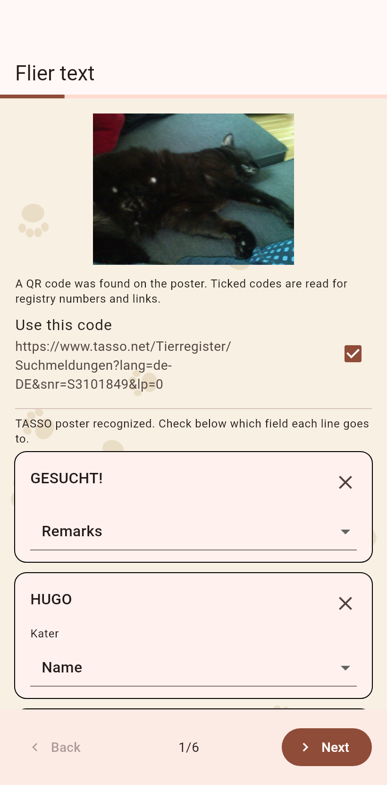
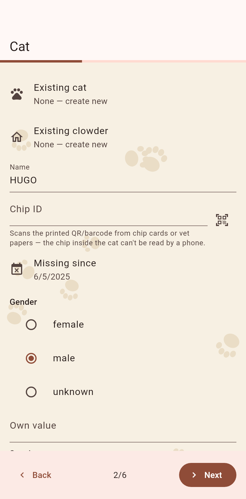
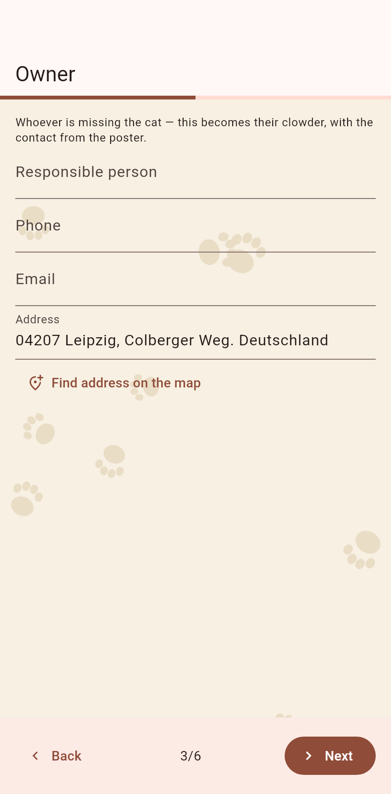
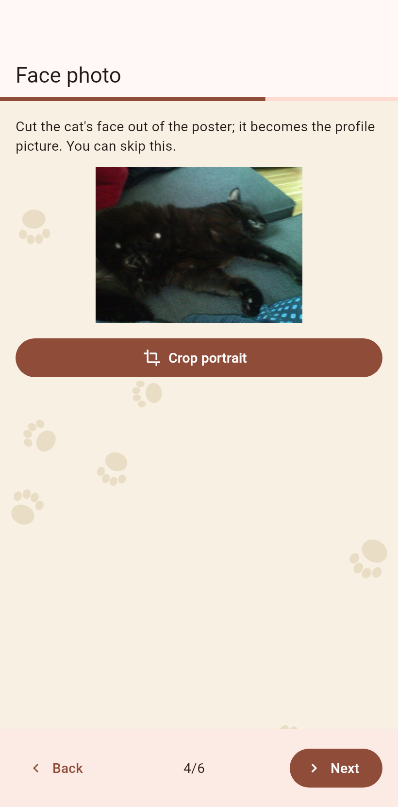
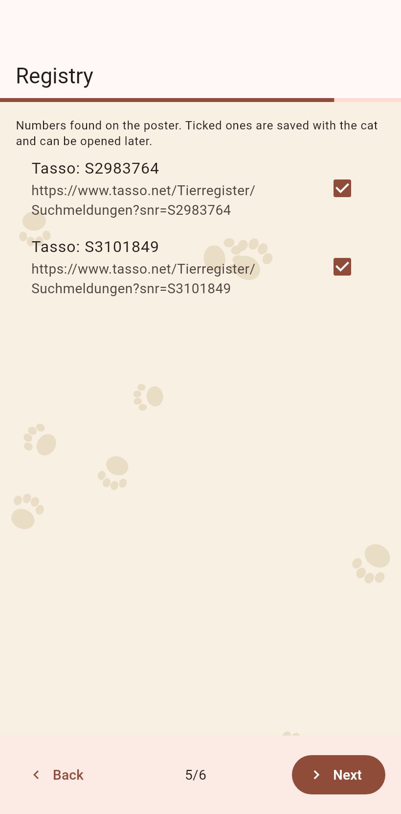
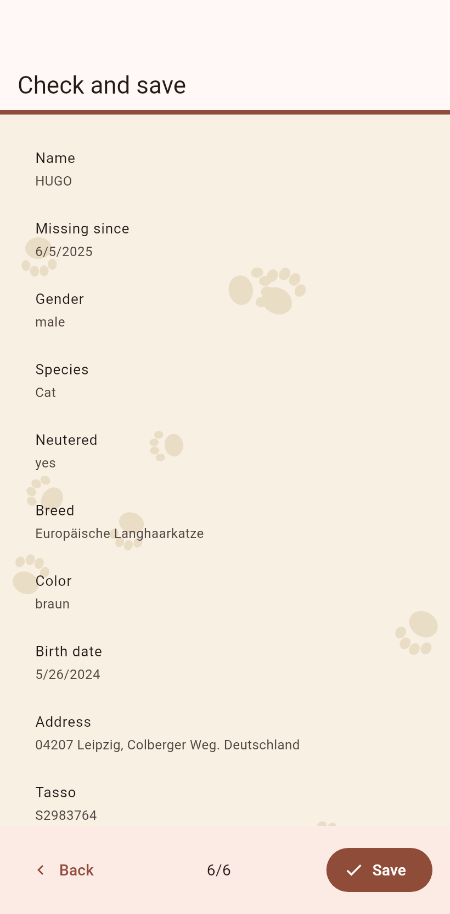

1. The lines
One card per line the camera read, the target under it. The X puts a line aside, Undo brings it back. Next.

2. The cat
Name, looks, missing since, read off the poster where a template knew the layout; correct what is wrong.

3. The owner
The owner's contact becomes a clowder with the status owner; the address can be located on the map.

4. The face
Crop the cat's face out of the poster's photo for the profile image.

5. The registry
Registry numbers on the poster become ID fields; a known registry gets its lookup link, an unknown one can be remembered.

6. The check
Everything at a glance. Save makes the cat, the owner's clowder and the flier position where the poster was photographed.
